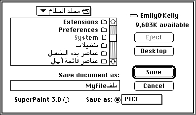

TextEdit, a Text-Processing Service
Macintosh system software provides a simple text-processing service, used by the Dialog Manager and other parts of system software, and available for your use also. TextEdit handles certain basic text-handling tasks for small (less than 32 KB) amounts of text.TextEdit maintains a text buffer, provides line breaks, tracks the selection range and insertion point for text, handles insertions and deletions from the buffer, and tracks style information for all its text. TextEdit formats and draws text properly in multiple styles and different script systems--even multiple scripts on a single line. TextEdit handles mixed-directional text, synchronizes fonts and keyboards, handles 2-byte characters, determines word boundaries, and matches text alignment with line direction. TextEdit even allows you to customize several of its features, such as word selection and text measurement.
If you want multiscript text handling, and you do not need to manipulate large files and do not need formatting other than font styles, TextEdit is a convenient alternative to writing your own text processor. You can use TextEdit at different levels of complexity:
Figure 1-10 TextEdit edits and displays mixed-directional text in a dialog box
- For the very simplest text handling (in dialog boxes), you needn't even call TextEdit directly. Use the Dialog Manager, which in turn uses TextEdit, to correctly edit and display text in either the system script or Roman script. For example, the Save As dialog box shown in Figure 1-10 handles mixed-directional text (in this case, Arabic) correctly. The Dialog Manager is described in Inside Macintosh: Macintosh Toolbox Essentials.

TextEdit does have limitations; it is not powerful or efficient enough for use as a general text editor. For example, TextEdit
- If you simply want to display one or more lines of static (non-editable) text, you can call the TextEdit
TETextBoxprocedure.TETextBoxdraws your text at the location you specify with the alignment you specify. You need not make any other TextEdit calls or allocate any data structures if you useTETextBox.- Other than dialog boxes and static text display, if your application requires very basic text handling, in which neither styled text nor multiple fonts are needed (as in many desk accessories), you may need only monostyled TextEdit. You can use monostyled TextEdit with the application font (if you don't allow the user to select a font) or with any single available font (if you do allow user selection) in any version of Roman or non-Roman Macintosh system software.
- If your application requires a somewhat higher level of text handling (allowing the user to set the font, size, and style of text, for example), you can use multistyled TextEdit. You can use multistyled TextEdit with any combination of available fonts, in any version of Roman or non-Roman Macintosh system software.
Nevertheless, TextEdit's convenience and multiscript capabilities make it an attractive alternative to writing your own text processor. TextEdit is described in the chapter "TextEdit" in this book.
- can only handle up to 32 KB of text
- is not highly optimized for speed
- contains data structures that can be inefficiently large for multistyled text